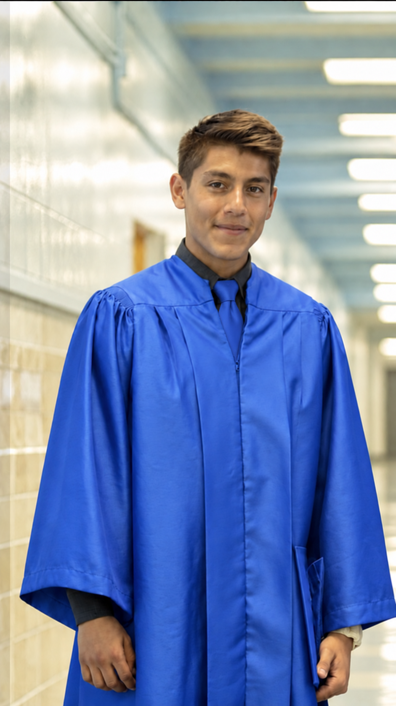

About Me
"An investment in knowledge pays the best interest." (Benjamin Franklin)
I'm Diego Serrano, a finance and accounting student at San Diego State University who cares about continuous growth and giving back to my community. I've built my path in finance by staying adaptable and taking on a range of challenges.

My Journey
I was born and raised in Los Angeles, California, and attended Santa Monica High School. My childhood was simple but full of energy, much of it spent on the soccer field. I played competitively for over six years with Pacific Coast Soccer Club and all four years on varsity in high school. As captain of both teams, I learned the value of discipline, leadership, and teamwork.
I continued my education at San Diego Mesa College, where I earned my Associate's degree in Business Administration and Management with High Honors distinction in 2024. I'm now completing my Bachelor's degree in Business Administration with an emphasis in Finance and a minor in Accounting at San Diego State University. I'm also a member of the Finance & Investment Society and the Association of Latino Professionals For America (ALPFA).
My Career Goals
My goal is to build a career in corporate finance, where I can turn financial data into analysis that helps businesses make better decisions. In the near term, I'm focused on developing strong technical skills in financial modeling, analysis, and reporting while completing my CPA eligibility, so I can bring both a finance and an accounting perspective to the work. Longer term, I want to grow into a role where I'm trusted to guide real decisions, whether that's in financial planning, treasury, or operational finance, and to keep learning as the tools and the field evolve. Above all, I want to do work that's rigorous, honest, and genuinely useful to the businesses and communities I serve.